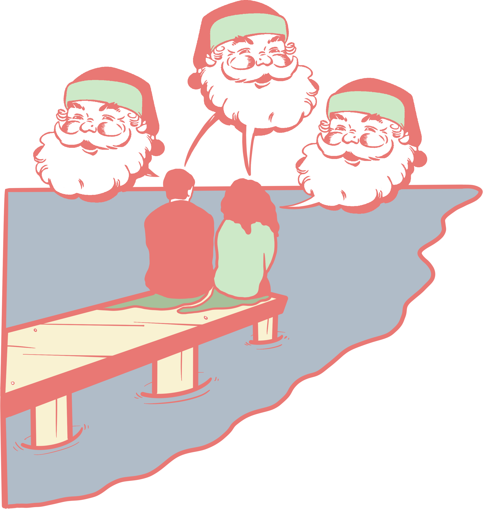

Sometimes I'm awakened in the middle of the night
by the clatter of a room service cart and I think back on Kitty.
Those summer evenings by the government lake, talking about the paradox of multiple Santas
or how it felt to have your heart broken.

Proceed!